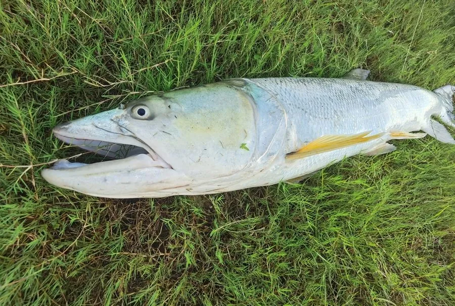

鱼类 · 动物界
鱤鱼 Elopichthys bambusa

中国江河中的大型凶猛鲤科鱼类，体呈长梭形、口大吻尖，游速快，以鱼类为食，被称为“水老虎”。
- 分类
- 门脊索动物门纲辐鳍鱼纲目鲤形目科鲤科属鱤属
- 栖息环境
- 江河中上层，喜欢水流较急、溶氧充足的江段
- 地理分布
- 中国长江、黄河、珠江、黑龙江等水系
- 保护级别
- 暂无评估；中国未列入国家重点保护野生动物名录
物种志
鱤鱼体呈长梭形，侧扁，头尖，吻部长而尖，口大，下颌前端有突起。体色背部灰褐或青灰，体侧银白，腹部白色，背鳍和尾鳍带灰黑色。成鱼体长一般 1–1.5 m，最大可达 2 m，体重可达 50 kg，是鲤科中体型最大的种类之一。
鱤鱼分布于中国长江、黄河、珠江、黑龙江等水系，栖息在江河的中上层，游速快，性情凶猛，以其他鱼类为食，成鱼能吞食体重数千克的鱼，因此被称为“水老虎”。它在繁殖期溯河而上，在急流中产卵。鱤鱼是江河中的顶级捕食者，对控制小型鱼类数量有一定作用，但也给养殖业带来危害。由于过度捕捞和水利工程，野生种群下降，目前尚无明确的 IUCN 评估。
形态与习性
- 食性凶猛肉食，以其他鱼类为食
- 体长一般 1–1.5 m，最大可达 2 m
- 体重最大可达 50 kg
- 习性游速快，常在水体中上层追捕猎物
- 繁殖繁殖期溯河而上，在急流中产卵
- 经济影响江河顶级捕食者，也会危害养殖鱼类
趣味知识
- 鱤鱼游速极快，能追上并吞食数千克重的其他鱼类。
- 它被称为“水老虎”，是江河中凶猛的顶级捕食者。
- 鱤鱼是鲤科中体型最大的种类之一，最大可超过 50 kg。